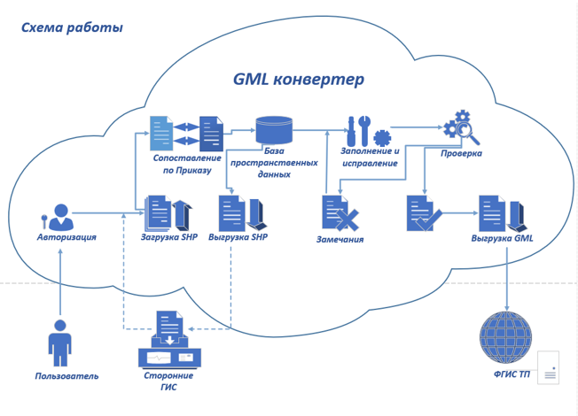

GML конвертер позволяет:
- загрузить векторные данные в формате shp;
- сопоставить импортированные слои со слоями приказа;
- сопоставить атрибутивную составляющую векторных данных с данными по приказу;
- отображать пространственные данные на картографической подоснове в условных обозначениях приказа;
- копировать и переносить векторные данные между слоями;
- вносить и изменять требуемую Приказом информацию;
- выполнять проверку данных на соответствие приказу;
- выгружать отчет о ошибках включая статистика и оценку % относительно документа;
- выгружать векторные данные в формате shp с атрибутами согласно требованиям приказа;
- выгружать документы территориального планирования в формате GML в соответствии с требованиями приказа.
Схема работы GML конвертера предоставлена ниже:
